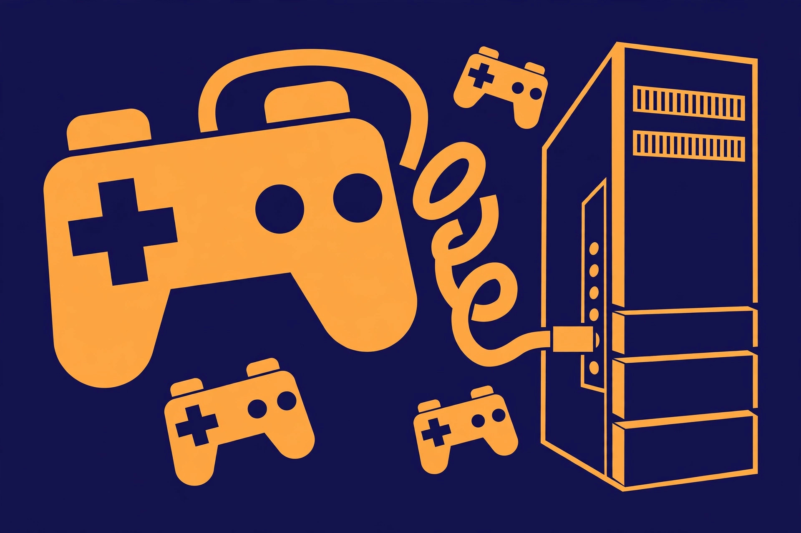

Reuse old game console controllers on a PC

Consoles retire; their controllers usually don't need to. A gamepad that outlived its console is one of the easiest pieces of old tech to reuse, because a PC is happy to accept input from almost anything — provided you connect it the way its generation expects. That last clause is where the frustration lives. Each generation of controller speaks a different dialect: some are pure plug-and-play, some need a specific receiver that has not been sold in years, and one famous cable looks like a solution while doing nothing at all. Start by identifying what is actually in the drawer.
The comparison table: generation by generation
| Controller | Connection to PC | What it takes |
|---|---|---|
| Wired Xbox 360 controller | USB cable, built in | Nothing extra. Plug it in and Windows installs the driver automatically — the easiest old pad of all. If the USB end is missing, the missing piece is the short breakaway cable section, which is replaceable. |
| Wireless Xbox 360 controller | Proprietary 2.4 GHz radio — not Bluetooth | The Xbox 360 Wireless Gaming Receiver for Windows, a USB dongle made for exactly this pad. No receiver, no connection, by any other route. |
| DUALSHOCK 4 (PlayStation 4) | Micro USB cable, or Bluetooth | PlayStation's own support covers both: a compatible micro USB cable, the official DUALSHOCK 4 USB wireless adaptor, or Bluetooth pairing. Works away from the console with compatible games and applications. |
| Wii Remote | Bluetooth, plus software | Pairs over Bluetooth and shows up as a standard input device, but Windows alone gives it little to do — software that understands it, such as the Dolphin emulator, is what makes it a controller again. |
The pattern to remember: the newer the pad, the more standard its connection. The older pads are absolutely reusable — they just refuse to be improvised.
The three Xbox 360 traps
The wireless Xbox 360 controller generates more wasted purchases than any other old pad, because three reasonable-looking buys are all wrong:
- A Bluetooth dongle. The 360 controller does not use Bluetooth at all — it speaks Microsoft's older proprietary wireless signal. There is no pairing menu on the PC that can ever find it.
- The Play & Charge cable. Plugged into the top of the controller, it charges the battery pack — and carries no input data whatsoever. Any charging cable in that port has the same limit: charge, yes; control, no.
- The current Xbox Wireless Adapter. The adapter sold for Xbox One and Xbox Series controllers does not support the 360 controller. Similar name, similar shape, different radio entirely.
The one correct purchase is the Xbox 360 Wireless Gaming Receiver for Windows itself — Microsoft's original or a third-party receiver made for the 360. Since the wired 360 pad needs nothing at all, the decision rule is simple: wired pad, spend zero; wireless pad, spend only on the 360-specific receiver, or accept that this particular pad stays with its console.
Connect each family, step by step
Wireless Xbox 360 controller (with the receiver)
- Plug the Wireless Gaming Receiver into a USB port on the PC and let Windows install its driver.
- Press and hold the Xbox Guide button on the controller until it turns on, with fresh batteries or a charged pack fitted.
- Press and release the small round Connect button on the receiver.
- Press and release the Connect button on the controller — the small button on the front edge, between the left bumper and the charging port.
- Wait for the pairing to settle: the controller's Ring of Light stops spinning and one quadrant stays lit, showing its player position.
DUALSHOCK 4 over Bluetooth
- Make sure the controller is off: if the player indicator is lit, hold the PS button until it turns off, and unplug any USB cable from the controller.
- Hold the SHARE button and the PS button together until the light bar starts flashing — the controller is now in pairing mode.
- On the PC, open Bluetooth settings, choose to add a Bluetooth device, and select the controller when it appears.
- When the light bar stops flashing and stays lit, the pad is paired. To use it wired instead, skip all of this: a micro USB cable is the whole procedure.
Wii Remote
- Put fresh batteries in the remote and turn the PC's Bluetooth on.
- Press and hold the 1 and 2 buttons together so the remote becomes discoverable, then add it from the PC's Bluetooth device list — it appears as "Nintendo RVL-CNT-01" or a similar name.
- Open the software that will use it. In the Dolphin emulator, open the Controllers menu, select Wii Remotes, choose "Real Wiimote", click Refresh, and press 1 and 2 together again to sync the remote to the program.
After it connects: prompts, Steam Input, and lost features
A connected pad is not always a understood pad. Most PC games are built around Microsoft's XInput standard, which speaks Xbox — A, B, X, Y, in Xbox positions. Steam's answer is Steam Input: it translates other controllers into a virtual Xbox controller the game can read. That is why a PlayStation pad so often produces Xbox button prompts on screen. It is not a fault and gameplay is unaffected; the game is simply being shown the controller it knows how to describe. A few newer games show correct PlayStation prompts, but generally only when Steam Input is disabled and the game detects the pad directly — correct prompts or maximum compatibility is a genuine trade-off, chosen per game.
In Steam, the setup lives under Settings, then Controller: enabling PlayStation Configuration Support there lets Steam configure a DUALSHOCK 4's mapping and sensitivity. Expect some features to thin out depending on the controller and the connection — Steam Input's own guidance is that advanced features such as motion sensing and controller audio may be limited over Bluetooth compared with a cable. None of this blocks play; it just means the oldest pads give you their buttons and sticks faithfully, and their exotic extras only sometimes.
What success looks like
Success is a pad that the PC names correctly — the controller appears in Steam's Controller settings or the operating system's device list — with every button, stick, and trigger responding in a game's input test or a controller tester, and no dropouts from across the sofa. Test it in one game you know well before declaring victory: if the prompts are Xbox-flavoured while the pad in your hands is a PlayStation one, that is the translation layer working as designed, not a problem to fix.
FAQ
Can a wireless Xbox 360 controller work without the receiver if I plug in its charge cable? No. The cable carries charge only, and the pad has no Bluetooth — the 360-specific receiver is the only wireless route.
Is a PlayStation 3 controller covered? Not here, honestly: it has no official PC support path, and the third-party driver tools it relies on could not be verified against an official source, so it is excluded rather than covered thinly.
Why do games show the wrong button letters? Because Steam Input is presenting your pad to the game as an Xbox controller, the layout most PC games understand. The buttons all work; only the on-screen labels differ.